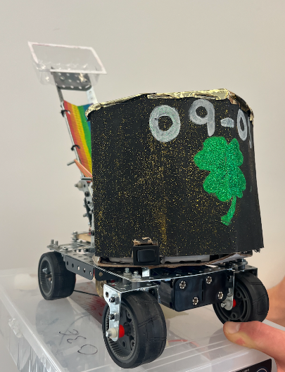

EMBEDDED SYSTEMS
Embedded Motor Control System
An Arduino-based motor-control integration project built with DC motors and an L298N motor driver.
Problem I’m solving
The team’s challenge was to design a motorized prototype that met competition safety requirements while navigating an obstacle course and accurately launching recyclable items into a bin. The system needed to overcome a bump and coordinate movement with the launching mechanism, balancing reliable control with the demands of competing against other teams.
Prototype and contribution
Our team built a motorized teddy-bear wheelchair prototype for a design competition, combining a drive system with a catapult to navigate an obstacle and launch recyclable items into a bin. The project earned first place in our section.
My work combined electrical integration, programming, mechanical prototyping, and testing alongside my teammates.
Electrical integration and troubleshooting
I wired and mounted the Arduino, L298N motor driver, DC motor, servo, and battery. To make room on the chassis, I redesigned the connections to eliminate the bulky breadboard and built a bracket for the motor driver. During early testing, I isolated a suspected faulty driver channel by swapping motor connections and found a way to run both prototype motors from the working channel.
When the circuit later stopped working, I traced the problem to depleted batteries and faulty wires. Replacing them restored motor and servo operation.
Drive system and competition code
For the revised wheelchair, I built the front-wheel drive system and supporting brackets, using a small motor pulley, a larger axle pulley, and a belt. I also helped refine the wheels and mechanical assembly through test runs.
Working with my teammates, I built on an existing motor-control codebase by adding a servo activation function and coding the structure for the speed-run and recycling-launch courses. We adjusted the code based on test results. I also helped develop a more reliable launcher trigger: the servo turned to strike the mousetrap activator instead of pulling a string.
